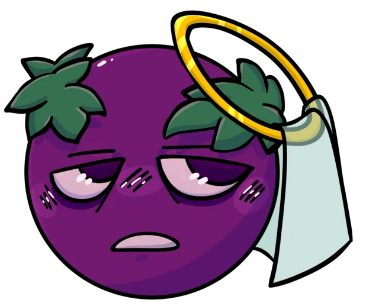
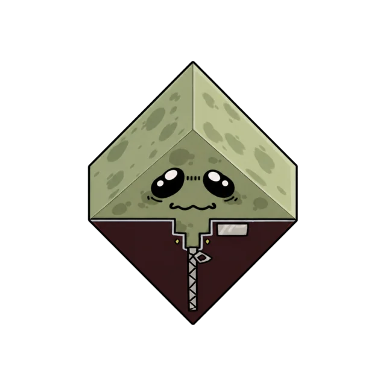
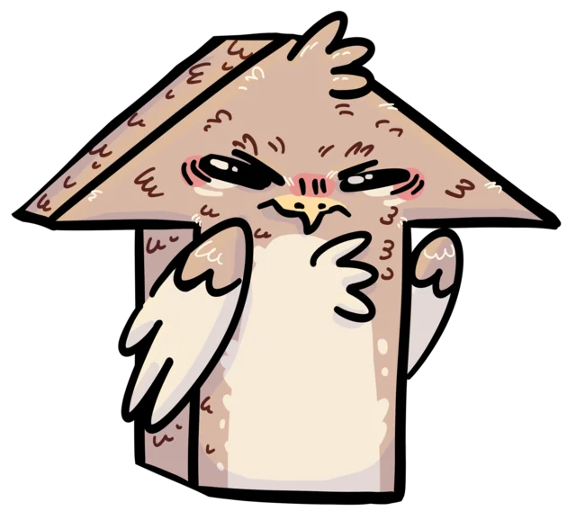
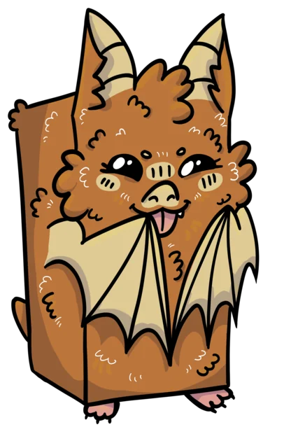
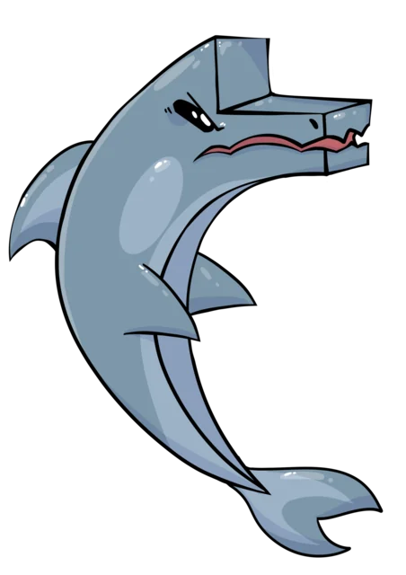
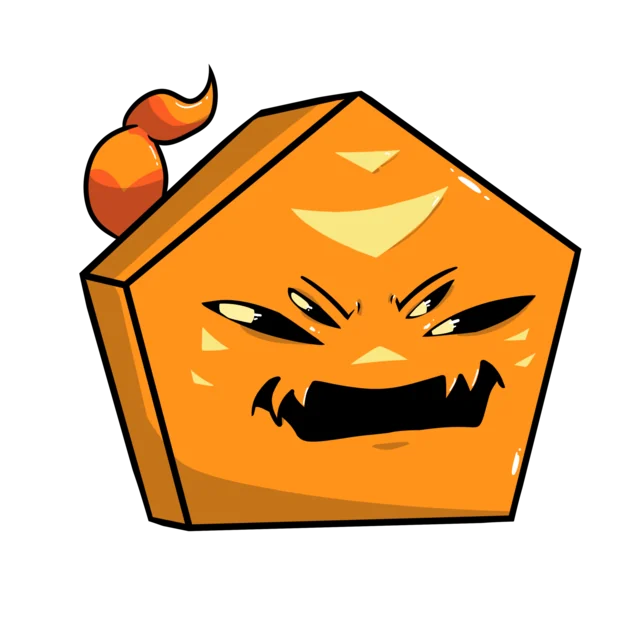
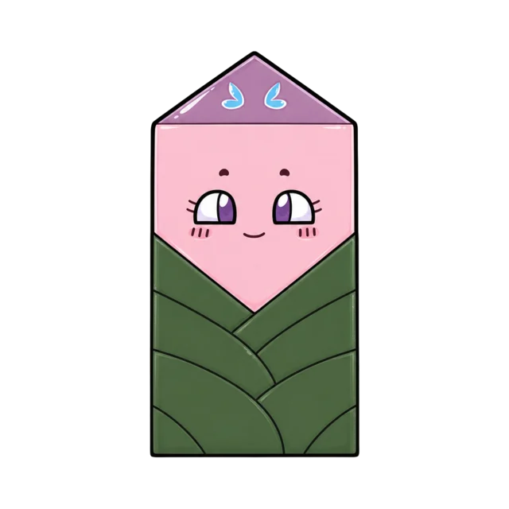

Ball is God?! Paikutin ang tore. Maging ang epekto.
Isang hardcore na vertical descent arcade kung saan pinapaikot ng pahalang na pag-drag ang tore sa paligid ng bumabagsak na si Espa. Lampasan ang mga ligtas na lapag, i-charge ang combo smash at tahakin ang isang mitikong mundo kung saan isang tama nang walang kalasag ang tatapos sa laro.
Aktibong produksyon: sampung eksena ng lokasyon, mga boss, sumasanga na usapan at mga landas ng karma na nagbabago ng mga patakaran ng laro.
Paikutini-drag ang tore sa paligid ng Espa
Panganiblaktawan ang tatlong ligtas na landing
Basaginmasira ang platform
Sa loob ng kasalukuyang build
Higit pa sa diyalogo ang binabago ng karma.
Binabago ng mga landas ng karma na maliwanag, neutral at madilim ang kilos ng kalasag, mga babala, pagkaagresibo ng kalaban at mga yugto ng boss, kaya binabago ng kuwento ang paraan ng iyong paglalaro.
Katayuan ng build Aktibong produksyonLahat ng sampung daigdig ng diyalogo
Mga background ng usapan para sa lahat ng sampung mundo, ayon sa pagkakasunod-sunod ng pagbaba mula Ena hanggang Deka.


Kasalukuyang production UI
Pagpili ng level, usapan at mga screen ng resulta sa kasalukuyang build.
Ito ang kasalukuyang daloy ayon sa pagkakasunod-sunod ng pagkikita mo rito: pagpili ng level, usapan, isang mahalagang pagpili, at pagkatapos ay tagumpay o hiwalay na screen ng pagkatalo. Lahat ng visual sa ibaba ay gumagamit ng sining mula sa production na proyekto ng Unity.
Pinipili ng celestial route ang mga nabuong level sa sampung kabanatang may tig-100 level.
Ang production menu ay nagmamapa ng sampung lokasyon sa 100-level na mga kabanata at direktang bubukas sa napiling run.

 201
201Nagaganap ang usapan sa loob mismo ng lokasyon.
Iisang patayong frame ang ginagamit ng larawan ng karakter, sining ng lokasyon at plaka ng nagsasalita.


Shash
Magpatuloy, kung gayon - ngunit huwag isipin na magiging madali ito. Naghihintay sa iyo ang mga Tria na gagawing tila isang maliit na bagay ang lahat ng nakaraan.
04 / Pagpili sa milestone
Ang sagot ay nagiging bahagi ng pagbaba.
Sa mga lokal na level 90 at 100, humihingi ang nakalaang panel ng desisyong buhayin o patayin bago tapusin ng diyalogo ang run.

Patawarin
Patayin
05 / Mga menu ng resulta
Tuloy ang tagumpay. Ang pagkatalo ay nagbabalik sa parehong hamon.
Ang kasalukuyang build ay may dalawang magkahiwalay na estado ng resulta: nag-aalok ang PanelWin ng replay at susunod na level, habang pinapanatili ng PanelOver ang iisang malinaw na aksyong replay.
Tagumpay · PanelWin
Nakumpleto ang pagbaba
 I-replay
Susunod
I-replay
Susunod
I-replay
Susunod
Mga character sa diyalogo
Mga mukhang makakasalubong sa pagbaba.
Nasa ibaba ang lahat ng 25 karakter na may kumpletong pares ng bukas at nakapikit na portrait para sa produksiyon. Itapat ang cursor o ituon ang card upang palitan ang ekspresyon.






















Pangkalahatang-ideya ng laro
Ang Ball is God?! ay isang hardcore na laro sa arcade tungkol sa pagbagsak sa gitna ng umiikot na tore.
Ang ideya
Gabayan si Espa pababa sa isang banal na tore. Maaaring tapusin ng isang pagkakamali ang takbo, at binabago ng malalaki mong pagpili kung paano gumagana ang mundo.
Kasalukuyang build
Naipatupad na ang sampung eksena ng lokasyon, procedural na pagbuo ng tore, combo smash, kalasag na swipe, mga ayos ng boss, sumasangang usapan, production menu, at mga portrait na handa sa iba't ibang ekspresyon.
Madla
Mga manlalarong mahilig sa mahihirap na mobile arcade, tiyempo ng panganib at gantimpala at mga boss, na may kuwentong susundan.
Katayuan
Aktibong produksyon. Saklaw ng mga kamakailang gawain ang mga runtime system, sining ng mundo, pagsubok at kung paano nilalaro ang laro sa telepono.
Mga Tampok
Ang ginagawa mo sa Ball is God?!
I-drag-to-rotate na pagbaba
Pinapaikot ng pahalang na pag-drag ang tore sa paligid ng kusang bumabagsak na si Espa, kaya naihahanay ang mga puwang, panganib at ligtas na plataporma.
Hardcore na presyon ng arcade
Tapos na ang takbo sa isang tama na walang proteksyon, kaya kailangan mong basahin ang tore at tiyempuhan ang bawat galaw.
Mga boss at mythic na mundo
Dinadala ng sampung eksena ng lokasyon, na bawat isa ay may sariling mga boss, ang kuwento mula sa isang mundo patungo sa susunod.
Mga pagpiling nagbabago ng mga patakaran
Binabago ng awa, puwersa at karma ang diyalogo, mga patakaran ng kalasag, pagiging agresibo ng kalaban, mga telegraph at mga yugto ng boss.
Gameplay loop
Paano maglaro ng Ball is God?!
- Hakbang 01Basahin ang pagbaba
Suriin ang susunod na mga plataporma, puwang at panganib at maghanap ng ligtas na tiyempo habang bumabagsak ka.
- Hakbang 02Paikutin ang tore
Pinapaikot ng pahalang na pag-drag ang mundo sa paligid ni Espa para ihanay ang isang ligtas na plataporma o isang sinasadyang puwang.
- Hakbang 03Panganib at basagin
Lampasan ang tatlong plataporma para i-charge ang combo smash, pagkatapos ay basagin ang mga estruktura habang pinoprotektahan ka ng kalasag sa isang nakamamatay na pagkakamali.
- Hakbang 04Piliin ang kahihinatnan
Hinuhubog ng awa at puwersa ang karma, diyalogo at mga patakaran ng gameplay na nadadala sa mga kalaban at mga boss.
Kwento / mundo
Isang mitikong tore kung saan sumusunod sa iyo pababa ang mga pinili mo.
Nagsimula ang Ball is God?! mula sa pagkahumaling noong pagkabata sa mga mobile vertical-descent arcade: pagbasa ng mga puwang, mabilis na pagtugon at pagkaligtas gamit ang instinct.
Kayang magdala ng higit pa ang format: mga boss, karakter na may personalidad, kuwento at tensyong moral. Sinusundan ng kasalukuyang proyekto si Espa sa sampung eksena ng lokasyon at sa mga kakaibang karakter, na may mga pagpiling nagbabago sa kuwento at sa laro.
Kaya ang layunin ay naging isang simpleng arcade na pababang patayo na may presyon ng laban sa boss at mga bunga ng isang RPG na hinuhubog ng kuwento.
- Bisyon
- Isang arcade na may umiikot na tore at mitikong kuwento
- Kasalukuyang saklaw ng mundo
- Sampung lokasyon at mga configuration ng boss
- Yugto ng kwento
- Kumpletuhin ang long-form na draft ng kuwento
- Kalagayan ng produksyon
- Aktibong produksyon
Sa isang tingin
Simpleng mga kontrol na drag, na may kuwentong nagbabago ng mga patakaran.
Agaran ang mga kontrol na drag-para-umikot. Ang iba pa ay nagmumula sa mga mitikong mundo, boss at mga pagpiling nagbabago ng laro.
Pinagsasama na ng kasalukuyang build ang deterministikong pagbuo ng tore, smash na may panganib at gantimpala, pagkatalo sa isang tama, mga boss, sumasanga na usapan at karma na nagbabago ng gameplay.
- Genre
- Arcade na pababang patayo na hinuhubog ng kuwento
- Target ng platform
- iOS / Android
- Hugis ng session
- Mabilis na session na batay sa kasanayan
- Studio
- WillowinWorlds
Mag-download ng mga asset
Mga asset ng Ball is God?! para sa press at creator
Mga WebP preview para sa saklaw ng press, pagsusuri ng publisher at sanggunian sa pahina ng store. Available kapag hiniling ang mga source file na full-resolution.
Brand at mga character
Ang icon ng laro kasama ang lahat ng 25 kasalukuyang character na may kumpletong mga portrait ng dialogue ng produksyon. Ang mga pangalan ay tumutugma sa Unity localization key.
EspaLarawan ng karakter ng manlalaro.
RevlaLarawan ng diyalogo sa produksyon.
ShashLarawan ng diyalogo sa produksyon.
ShushLarawan ng diyalogo sa produksyon.
ShishLarawan ng diyalogo sa produksyon.
GigoLarawan ng diyalogo sa produksyon.
GogaLarawan ng diyalogo sa produksyon.
GigaLarawan ng diyalogo sa produksyon.
AskoldLarawan ng diyalogo sa produksyon.
MirasLarawan ng diyalogo sa produksyon.
HihLarawan ng diyalogo sa produksyon.
HehLarawan ng diyalogo sa produksyon.
HahLarawan ng diyalogo sa produksyon.
MusyaLarawan ng diyalogo sa produksyon.
DusyaLarawan ng diyalogo sa produksyon.
SusyaLarawan ng diyalogo sa produksyon.
VladusLarawan ng diyalogo sa produksyon.
FrishaLarawan ng diyalogo sa produksyon.
LurenLarawan ng diyalogo sa produksyon.
KurenLarawan ng diyalogo sa produksyon.
Don YagonLarawan ng diyalogo sa produksyon.
LuryaLarawan ng diyalogo sa produksyon.
KhleyaLarawan ng diyalogo sa produksyon.
VaronLarawan ng diyalogo sa produksyon.
WhiteLarawan ng diyalogo sa produksyon.
Mga background ng menu
Kasalukuyang production artwork na ginagamit ng celestial level-selection system.
 Makalangit na menu
Makalangit na menu


Mga mundong pababang patayo
Kumpletong set ng sampung kasalukuyang background ng lokasyon, nakaayos mula Ena hanggang Deka.
 01 · Mundo ng langitBackground ng patayong pagbaba ni Ena.
01 · Mundo ng langitBackground ng patayong pagbaba ni Ena.
 02 · Mundo ng kalawakanBackground ng patayong pagbaba ni Dyo.
02 · Mundo ng kalawakanBackground ng patayong pagbaba ni Dyo.
 03 · Mundo ng bagyoBackground ng patayong pagbaba ni Tria.
03 · Mundo ng bagyoBackground ng patayong pagbaba ni Tria.
 04 · Mundo ng niyebeBackground ng patayong pagbaba ni Tessera.
04 · Mundo ng niyebeBackground ng patayong pagbaba ni Tessera.
 05 · Mundo ng bulkanBackground ng Pente; may animation sa laro.
05 · Mundo ng bulkanBackground ng Pente; may animation sa laro.
 06 · Mundo ng karagatanBackground ng patayong pagbaba ni Eksi.
06 · Mundo ng karagatanBackground ng patayong pagbaba ni Eksi.
 07 · Mundo ng disyertoBackground ng patayong pagbaba ni Epta.
07 · Mundo ng disyertoBackground ng patayong pagbaba ni Epta.
 08 · Mundo ng kagubatanBackground ng patayong pagbaba ni Ohto.
08 · Mundo ng kagubatanBackground ng patayong pagbaba ni Ohto.
 09 · Mundo ng kuwebaBackground ng patayong pagbaba ni Ennea.
09 · Mundo ng kuwebaBackground ng patayong pagbaba ni Ennea.
 10 · Mundo ng impiyernoBackground ng patayong pagbaba ni Deka.
10 · Mundo ng impiyernoBackground ng patayong pagbaba ni Deka.
Mga background sa arcade ng kwento
Kumpletong set ng dialogue-location: ang Hall of Light at mga background para sa lahat ng sampung mundo.
 00 · Bulwagan ng LiwanagBackground ng pambungad na diyalogo
00 · Bulwagan ng LiwanagBackground ng pambungad na diyalogo
 01 · Diyalogo sa langitBackground ng kuwento ni Ena.
01 · Diyalogo sa langitBackground ng kuwento ni Ena.
 02 · Diyalogo sa espasyoBackground ng kuwento ni Dyo.
02 · Diyalogo sa espasyoBackground ng kuwento ni Dyo.
 03 · Diyalogo ng bagyoBackground ng kuwento ni Tria.
03 · Diyalogo ng bagyoBackground ng kuwento ni Tria.
 04 · Diyalogo sa niyebeBackground ng kuwento ni Tessera.
04 · Diyalogo sa niyebeBackground ng kuwento ni Tessera.
 05 · Diyalogo sa bulkanBackground ng kuwento ni Pente.
05 · Diyalogo sa bulkanBackground ng kuwento ni Pente.
 06 · Diyalogo sa karagatanBackground ng kuwento ni Eksi.
06 · Diyalogo sa karagatanBackground ng kuwento ni Eksi.
 07 · Diyalogo sa disyertoBackground ng kuwento ni Epta.
07 · Diyalogo sa disyertoBackground ng kuwento ni Epta.
 08 · Diyalogo sa gubatBackground ng kuwento ni Ohto.
08 · Diyalogo sa gubatBackground ng kuwento ni Ohto.
 09 · Diyalogo sa kuwebaBackground ng kuwento ni Ennea.
09 · Diyalogo sa kuwebaBackground ng kuwento ni Ennea.
 10 · Diyalogo sa impiyernoBackground ng kuwento ni Deka.
10 · Diyalogo sa impiyernoBackground ng kuwento ni Deka.
FAQ ng Ball is God?!
Mga karaniwang tanong tungkol sa Ball is God?!
Anong klaseng laro ang Ball is God?!
Isang hardcore na vertical descent arcade. Paiikutin mo ang tore sa paligid ng bumabagsak na si Espa, lalampasan ang mga ligtas na lapag para ma-charge ang mga smash at tahakin ang mga mitikong mundo.
Paano nilalaro ang Ball is God?!
I-drag nang pahalang para paikutin ang tore, lampasan ang tatlong plataporma para mag-charge ng smash, at mag-swipe nang patayo kapag kailangang saluhin ng cooldown shield ang isang nakamamatay na tama.
Inilabas na ba ang Ball is God?!
Hindi pa. Aktibo itong ginagawa sa mga runtime system, sining ng mundo, nilalaman ng kuwento at pagsubok. Wala pang pampublikong petsa ng paglabas. Ang mga target na platform ay iOS at Android.
Ano ang nagpapaiba sa Ball is God?!
Pinagsasama nito ang presyur ng arcade na may panganib at gantimpala sa sampung lokasyon at karma na nagbabago ng usapan, mga kalaban, babala sa atake, mga kalasag at mga boss.
Sino ang gumagawa ng Ball is God?!
WillowinWorlds, isang independiyenteng studio na gumagawa ng mga mobile puzzle at arcade na laro.
Puwede ko bang gamitin ang mga press asset ng Ball is God?!
Oo, para sa press, pagsusuri ng publisher at mga sanggunian sa store. Nananatiling pribado ang mga source file maliban kung hihilingin mo ang mga ito sa amin.
Ball is God?! Devlog
Ano ang nagbago at kailan
- Mga ibabaw ng mundo at pagpapatunay ng panganib
Nagkaroon ng pinagsamang visual at validation pass ang presentasyon ng karakter, deterministikong pagbuo at mga panganib na tinik.
- Hulyo 2026Pagpapahusay sa production UI at mga character
Nasa lugar na ngayon ang pagpili ng level, magkakabahaging action control, patayong frame ng usapan at magkakapares na ekspresyon ng karakter.
- Pebrero 2026Pagsusuri sa saklaw ng proyekto
Nakumpleto ng pangkat ang malaking yugto ng pagsasama ng kuwento at sinuri ang buong saklaw ng proyekto: sampung mundo, mga pagpiling moral, mga boss, at iba't ibang wakas.
- Abril-Mayo 2025Pagsusulat muli ng kwento at kakayahan
Ang buong kuwento ay muling isinulat, ang mga kakayahan ng karakter ay napabuti at ang mga kahihinatnan sa moral ay naging mas malinaw.
- Agosto 2024Nagsisimula ang direksyon ng kwento
Nagpasya ang koponan na dapat higit pa ang Ball is God?! sa simpleng arcade na pagbaba, at nagdagdag ng mitikong kuwento at bisyon ng mga pagpiling moral.
- Hulyo 2024Orihinal na konsepto
Nagsimula ang proyekto bilang unang ideya ng studio sa laro: isang mabilis na patayong arcade tungkol sa pagbagsak sa isang banal na tore.
- Kasalukuyang buildArcade at kuwento sa iisang build
Gumagana na nang sabay sa iisang build ang pagbaba sa umiikot na tore, combo smash, swipe shield, mga boss, usapan at karma.